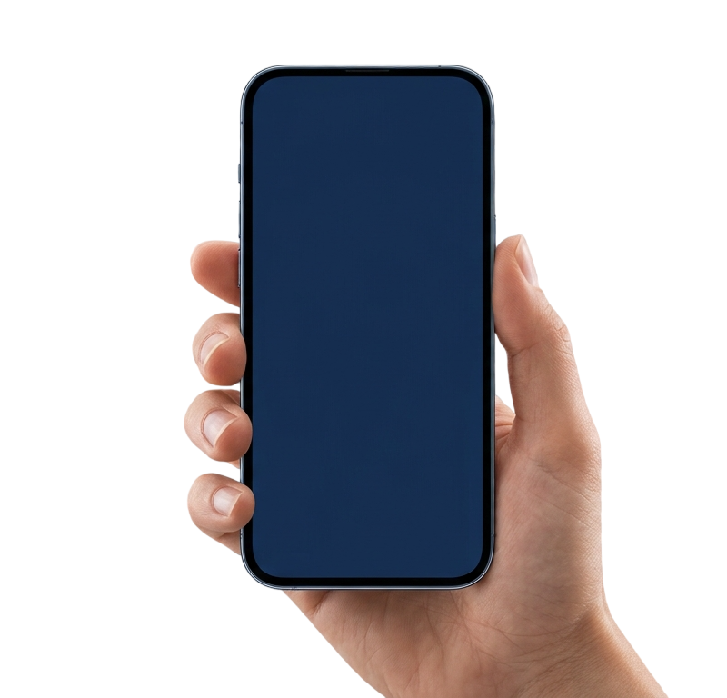

Sua recuperação com mais segurança e agilidade
Conectamos médicos e pacientes durante todo o processo pós-cirúrgico, garantindo monitoramento contínuo e acompanhamento da evolução clínica.
Conectamos médicos e pacientes durante todo o processo pós-cirúrgico, garantindo monitoramento contínuo e acompanhamento da evolução clínica.
01.
Histórico completo de cirurgias e evolução do paciente centralizado em um só lugar.
02.
Sinais de alerta enviados em tempo real com análise de dados automatizada.
03.
Dados em tempo real através do uso de smartwatches e wearables integrados ao app, permitindo monitoramento contínuo.
04.
Gráficos e relatórios sobre sintomas, dor, mobilidade e outros indicadores de recuperação.
05.
Criptografia de ponta a ponta e conformidade com a LGPD para total segurança.

O médico realiza o cadastro do paciente, que recebe um convite para acessar a plataforma.
O paciente consegue ter acesso a um dashboard com informações sobre sua evolução clínica, incluindo gráficos e relatórios sobre sintomas, dor, mobilidade e outros indicadores de recuperação.
Todos os dias, o paciente registra informações sobre sua evolução clínica, de acordo com os campos definidos pelo médico.
A cada hora, métricas são coletadas automaticamente através do uso de smartwatches e wearables integrados ao app, permitindo monitoramento contínuo.